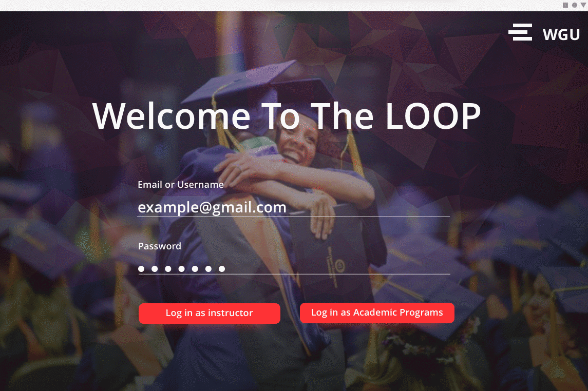

Like every forward-thinking industry, education is evolving with technology. As we look to the future we want to take with us the most valuable aspects of traditional teaching and learning, and synthesize them with advances in learning science. How do we keep up with these advancements while supporting student success?

Loop is a quiz publishing workflow that accommodates the needs of a rapidly growing online university. This application enables instructors to support student learning with quizzes at critical moments during a self-guided learning experience. Informed by instructors’ content expertize and boosted by a research-backed quiz creation framework, Loop helps integrate components that are critical for successful online learning.